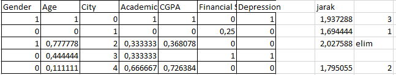
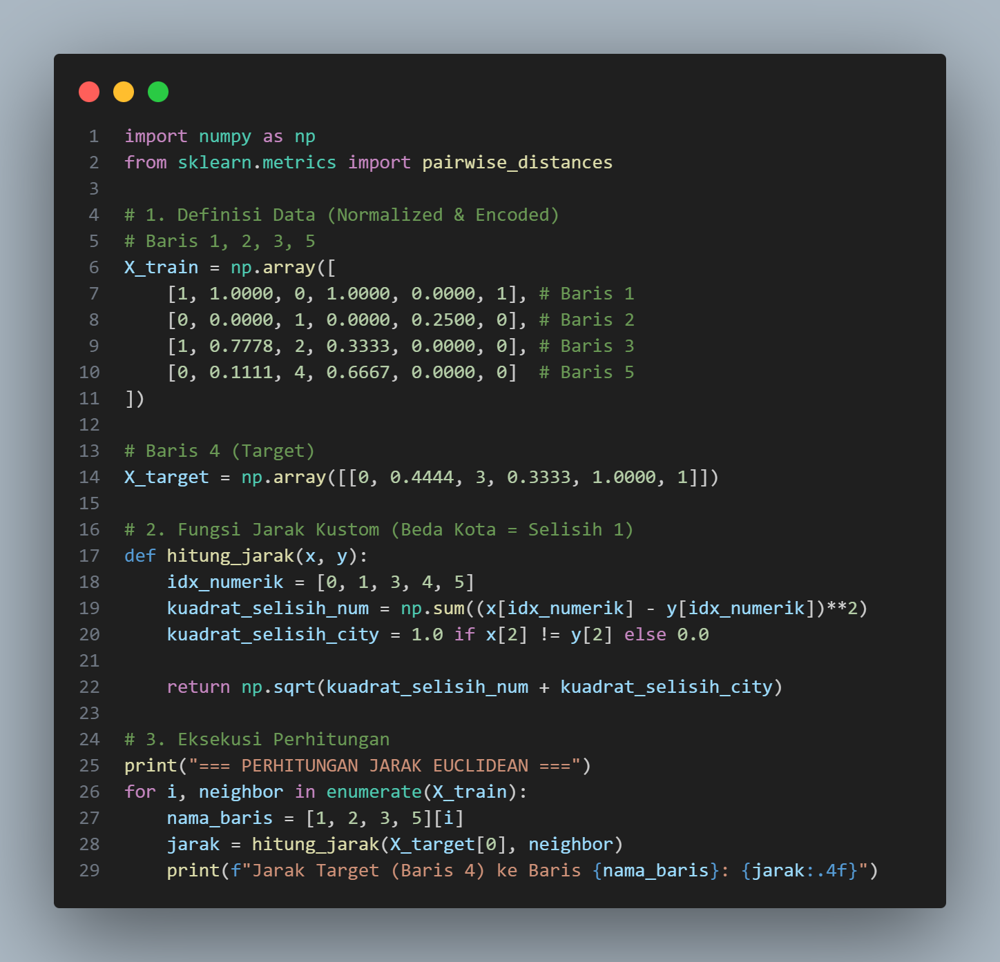
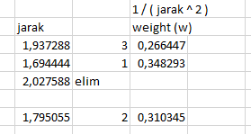
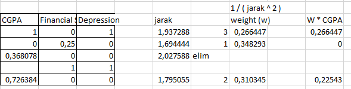
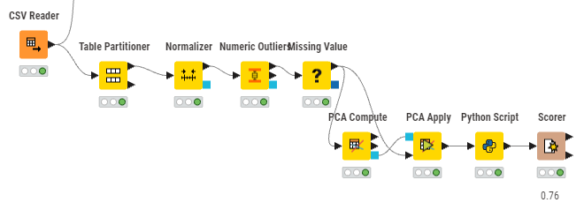

Data Understanding#
Apa itu Metodologi CRISP-DM?#
Dalam mengerjakan proyek penambangan data ini, kita mengikuti alur CRISP-DM (Cross-Industry Standard Process for Data Mining). Metodologi ini punya 6 tahapan utama, mulai dari memahami bisnis sampai modelnya siap dipakai. Tahap Data Understanding adalah fase kedua setelah Business Understanding. Kalau di fase pertama kita fokus ke “apa masalahnya?”, di fase kedua ini kita fokus ke “mana datanya?” dan “gimana kondisi datanya?”.
Tujuan Utama Fase Ini:#
Kenalan sama data: Biar kita gak asing sama isi tabelnya.
Cek Kualitas: Mastiin datanya bersih, gak ada yang kosong (missing values), atau gak ada yang aneh (outliers).
Cari Insight Awal: Nemu pola-pola menarik lewat statistik simpel.
Persiapan Akses Data#
Sebelum kita bisa memahami pola dan karakteristik data, kita perlu memastikan data bisa diakses dengan baik. Tahap ini termasuk bagian dari Data Understanding, karena kita sedang mengenali sumber data dan cara membacanya.
Install Library & Connect Python ke Database
Jalankan perintah berikut di terminal/command prompt untuk menginstal library yang dibutuhkan:
pip install pandas seaborn matplotlib numpy sqlalchemy pymysql
Kenapa perintahnya panjang? Karena kita mengunduh beberapa alat sekaligus:
SQLAlchemy: Mesin pengolah database.
PyMySQL: “Kabel” penghubung ke MySQL Laragon.
Pandas: Pembuat tabel agar data rapi.
Seaborn & Matplotlib: Alat visualisasi untuk grafik.
NumPy: Mesin hitung numerik yang dipakai Pandas dan Seaborn.
import pandas as pd
import seaborn as sns
import matplotlib.pyplot as plt
import numpy as np
from sqlalchemy import create_engine
# Koneksi ke MySQL Laragon
engine = create_engine("mysql+pymysql://root:@localhost/pendata")
df = pd.read_sql("SELECT * FROM iris", engine)
print("✅ Data Berhasil Diambil dari MySQL!")
Sampel Data
Berikut adalah gambaran 5 baris pertama (head) dari dataset Iris untuk menunjukkan format data awal:
index |
sepal_length |
sepal_width |
petal_length |
petal_width |
species |
|---|---|---|---|---|---|
0 |
5.1 |
3.5 |
1.4 |
0.2 |
Iris-setosa |
1 |
4.9 |
3.0 |
1.4 |
0.2 |
Iris-setosa |
2 |
4.7 |
3.2 |
1.3 |
0.2 |
Iris-setosa |
3 |
4.6 |
3.1 |
1.5 |
0.2 |
Iris-setosa |
4 |
5.0 |
3.6 |
1.4 |
0.2 |
Iris-setosa |
Struktur Dataset
Berdasarkan pemeriksaan awal terhadap Iris Flower Dataset, diperoleh informasi struktur sebagai berikut:
Jumlah Baris: Dataset ini memiliki total 150 baris (records).
Jumlah Kolom: Terdapat 5 kolom utama yang digunakan untuk proses analisis.
Sumber Data: Dataset diperoleh dari repositori publik Kaggle.
Deskripsi Atribut (Tipe Data)
Dataset ini terdiri dari 4 atribut numerik yang merepresentasikan ukuran bagian bunga dalam satuan centimeter (cm) dan 1 atribut kategorikal yang berfungsi sebagai label atau target klasifikasi bunga tersebut.
Kita pakai fungsi df.info() buat lihat tipe data tiap kolom dan mastiin nggak ada data yang bolong.
df.info()
Nama Atribut |
Tipe Data |
Deskripsi |
|---|---|---|
sepal_length |
Numerik (Float) |
Panjang kelopak bunga dalam cm. |
sepal_width |
Numerik (Float) |
Lebar kelopak bunga dalam cm. |
petal_length |
Numerik (Float) |
Panjang mahkota bunga dalam cm. |
petal_width |
Numerik (Float) |
Lebar mahkota bunga dalam cm. |
species |
Kategorikal (String) |
Label spesies bunga (Setosa, Versicolor, Virginica). |
Catatan: Atribut numerik akan digunakan sebagai variabel independen, sedangkan atribut
speciesakan menjadi variabel dependen.
Analisis Singkat:
Total Sampel: 150 data.
Kondisi: Data sangat sehat karena tidak ditemukan nilai kosong (Non-Null).
Atribut: Terdiri dari 4 fitur angka (panjang & lebar kelopak/mahkota) dan 1 kolom target (spesies).
Statistik Deskriptif
Kita hitung nilai rata-rata (\(\bar{x}\)) dan sebaran datanya (\(\sigma\)) untuk melihat ringkasan angka dari 150 sampel yang kita punya.
Kode Python:
# Menampilkan ringkasan statistik untuk semua fitur numerik
df.describe()
index |
sepal_length |
sepal_width |
petal_length |
petal_width |
|---|---|---|---|---|
count |
150.0 |
150.0 |
150.0 |
150.0 |
mean |
5.843333333333334 |
3.0540000000000003 |
3.758666666666666 |
1.1986666666666668 |
std |
0.8280661279778629 |
0.4335943113621737 |
1.7644204199522617 |
0.7631607417008414 |
min |
4.3 |
2.0 |
1.0 |
0.1 |
25% |
5.1 |
2.8 |
1.6 |
0.3 |
50% |
5.8 |
3.0 |
4.35 |
1.3 |
75% |
6.4 |
3.3 |
5.1 |
1.8 |
max |
7.9 |
4.4 |
6.9 |
2.5 |
Penjelasan Parameter:
Setelah menjalankan fungsi
df.describe(), kita akan mendapatkan beberapa parameter kunci yang menjelaskan karakteristik data Iris kita:
Count: Menunjukkan jumlah total baris data yang ada. Untuk dataset ini, jumlahnya adalah 150 sampel.
Mean: Nilai rata-rata dari seluruh data pada atribut tertentu.
Std: Standar deviasi, yang menunjukkan seberapa jauh data tersebar dari nilai rata-ratanya. Semakin besar nilainya, berarti data semakin bervariasi.
Min: Nilai terkecil yang ditemukan dalam kolom tersebut.
Max: Nilai terbesar yang ditemukan dalam kolom tersebut.
Verifikasi Kualitas Data (Null & Duplicate)#
Setelah kita cek angka-angkanya, sekarang kita pastikan data ini benar-benar bersih. Di dunia penambangan data, ada istilah “Garbage In, Garbage Out”; kalau datanya sampah, hasilnya pun bakal sampah.
Pemeriksaan Nilai Null (Missing Values)
Data kosong bisa bikin algoritma kita error atau salah hitung. Kita pakai fungsi isnull() untuk melihat apakah ada baris yang bolong.
Kode Python:
# Cek jumlah data kosong di setiap kolom
print("Jumlah Data Null:")
print(df.isnull().sum())
Pemeriksaan dilakukan untuk mengidentifikasi keberadaan nilai kosong (missing values) pada setiap variabel dalam dataset. Berdasarkan hasil pengecekan, seluruh kolom tidak memiliki nilai null.
Jumlah Data Null per Kolom
Nama Kolom |
Jumlah Null |
|---|---|
sepal_length |
0 |
sepal_width |
0 |
petal_length |
0 |
petal_width |
0 |
species |
0 |
dtype: int6 |
Analisis:
Jika hasilnya semua 0, berarti data Iris kamu sudah aman dan lengkap. Tidak perlu ada proses “tambal sulam” data (imputasi).
Pemeriksaan Data Duplikat
Data duplikat adalah baris yang memiliki seluruh nilai kolom identik satu sama lain. Keberadaan data duplikat dalam jumlah signifikan dapat memengaruhi hasil analisis, terutama pada pemodelan machine learning, karena dapat menyebabkan bias distribusi dan meningkatkan risiko overfitting.
# Cek jumlah data yang kembar
jml_duplikat = df.duplicated().sum()
print(f"Jumlah data duplikat: {jml_duplikat}")
# Kalau mau lihat data mana aja yang kembar:
if jml_duplikat > 0:
print(df[df.duplicated()])
Berdasarkan hasil pengecekan, ditemukan adanya data duplikat dalam dataset.
Jumlah Data Duplikat
Total data duplikat: 3 baris
Index |
sepal_length |
sepal_width |
petal_length |
petal_width |
species |
|---|---|---|---|---|---|
34 |
4.9 |
3.1 |
1.5 |
0.1 |
Iris-setosa |
37 |
4.9 |
3.1 |
1.5 |
0.1 |
Iris-setosa |
142 |
5.8 |
2.7 |
5.1 |
1.9 |
Iris-virginica |
Ditemukan tiga baris dengan nilai identik.
Visualisasi Data#
Histogram#
Apa itu Histogram?#
Histogram adalah grafik batang yang menggambarkan distribusi atau penyebaran frekuensi data. Alih alih melihat tumpukan angka dalam tabel, histogram mengubahnya menjadi bentuk visual agar kita bisa melihat pola data secara instan.
Kenapa Kita Melakukan Visualisasi Ini?
Tujuannya adalah untuk memahami karakteristik fisik (seperti panjang dan lebar kelopak bunga) secara cepat. Kita bisa langsung mengetahui:
Pola Utama: Nilai mana yang paling sering muncul (rata-rata).
Variasi: Seberapa luas rentang datanya.
Anomali: Apakah ada data yang letaknya sangat jauh dari kelompok utama.
Panduan Membaca Sumbu (X & Y)
Agar mudah dipahami, bayangkan sumbu ini sebagai koordinat dasar:
Sumbu X (Horizontal/Mendatar): Mewakili Nilai atau Ukuran. Misalnya, panjang kelopak dalam satuan cm (5cm, 6cm, dst).
Sumbu Y (Vertical/Tegak): Mewakili Frekuensi atau Jumlah. Menunjukkan berapa kali ukuran di sumbu X tersebut muncul dalam data kita.
Logika Singkat: Sumbu X adalah “Apa ukurannya?”, Sumbu Y adalah “Berapa banyak jumlahnya?”.
 Fig. 1 Histogram Distribusi Frekuensi Fitur sepal_length
Fig. 1 Histogram Distribusi Frekuensi Fitur sepal_length
 Fig. 2 Histogram Distribusi Frekuensi Fitur sepal_width
Fig. 2 Histogram Distribusi Frekuensi Fitur sepal_width
 Fig. 3 Histogram Distribusi Frekuensi Fitur petal_length
Fig. 3 Histogram Distribusi Frekuensi Fitur petal_length
 Fig. 4 Histogram Distribusi Frekuensi Fitur petal_width
Fig. 4 Histogram Distribusi Frekuensi Fitur petal_width
 Fig. 5 Histogram Distribusi Frekuensi Fitur species
Fig. 5 Histogram Distribusi Frekuensi Fitur species
Scatter plot#
Apa itu Scatter Plot?#
Scatter plot (diagram titik) adalah grafik yang digunakan untuk melihat hubungan antara dua variabel angka. Jika histogram hanya melihat satu fitur, scatter plot mempertemukan dua fitur sekaligus untuk melihat apakah mereka saling memengaruhi.
Kenapa Kita Melakukan Visualisasi Ini?#
Tujuannya adalah untuk mencari Korelasi (pola hubungan). Dengan scatter plot, kita bisa menjawab pertanyaan seperti:
“Kalau kelopak bunganya makin panjang, apakah lebarnya otomatis makin besar juga?”
“Apakah ada kelompok data yang terpisah secara jelas?” (Ini sangat penting untuk teknik Clustering di mata kuliah Penambangan Data).
Memahami Sumbu X dan Y (Titik Pertemuan)#
Cara membacanya sangat sederhana, bayangkan seperti koordinat di peta:
Sumbu X (Horizontal): Variabel pertama (misal: Panjang Sepal).
Sumbu Y (Vertical): Variabel kedua (misal: Lebar Sepal).
Titik (Dot): Setiap satu titik di grafik mewakili satu sampel data yang merupakan pertemuan antara nilai X dan nilai Y.
Scatter Plot sepal_length dan sepal_width
 Fig. 6 Scatter Plot Fitur sepal_length dan sepal width
Fig. 6 Scatter Plot Fitur sepal_length dan sepal width
Korelasi: Nilai \(r = -0.11\) menunjukkan korelasi negatif yang sangat lemah, hampir mendekati nol.
Insight: Artinya, panjang sepal tidak terlalu memengaruhi lebarnya. Titik-titik data terlihat menyebar (scattered) tanpa membentuk pola garis yang jelas. Untuk klasifikasi, fitur sepal ini biasanya lebih sulit membedakan antar spesies dibanding fitur petal.
Scatter Plot petal dan petal_width
 Fig. 7 Scatter Plot Fitur petal_length dan petal_width
berikut jika di implementasikan di python
Fig. 7 Scatter Plot Fitur petal_length dan petal_width
berikut jika di implementasikan di python
print("Korelasi petal_length dan petal_width: ",round(df['petal_width'].corr(df['petal_length']), 2))
plt.scatter(df['petal_length'], df['petal_width'])
plt.xlabel('petal_length')
plt.ylabel('petal_width')
plt.title('Scatter Plot petal_length vs petal_width')
plt.show()

Korelasi: Nilai \(r = 0.96\) menunjukkan korelasi positif yang sangat kuat (mendekati sempurna). Insight: Ada hubungan linear yang sangat konsisten semakin panjang kelopak (petal), maka lebarnya hampir pasti bertambah secara proporsional.
Cluster: Kamu bisa melihat ada kelompok kecil di pojok kiri bawah yang terpisah jauh dari kelompok besar lainnya. Itu adalah spesies Setosa, yang secara fisik memang jauh lebih kecil dibanding Versicolor dan Virginica.
Outlier#
Apa itu Outlier?#
Outlier (Pencilan) adalah titik data yang nilainya sangat jauh berbeda dari mayoritas data lainnya dalam satu kelompok. Bayangkan jika kamu mendata tinggi badan mahasiswa di kelasmu yang rata-rata 160–170 cm, tiba-tiba ada satu orang yang tingginya 210 cm. Nah, orang tersebut adalah outlier.
Kenapa Kita Harus Mendeteksi Outlier?
Dalam pengolahan data, outlier bisa terjadi karena dua hal:
Kesalahan Input: Misalnya salah ketik angka (seharusnya 1.5 jadi 15).
Variasi Alami: Memang ada sampel yang unik/langka.
Penting untuk mendeteksi mereka karena outlier bisa “merusak” hasil statistik (seperti rata-rata) dan membuat model prediksi menjadi tidak akurat.
Metode: Local Outlier Factor (LOF)
Berdasarkan gambar laporan, saya menggunakan metode LOF.
Cara Kerjanya: LOF tidak hanya melihat nilai angka, tapi melihat kepadatan di sekitar sebuah titik. Jika sebuah titik berada di area yang sangat sepi (jauh dari tetangganya/neighbors), maka sistem akan menandainya sebagai outlier.
Sumbu X & Y pada Outlier : Dalam visualisasi yang kamu buat, sumbu X dan Y tetap mewakili fitur data, namun sistem menambahkan tanda khusus (biasanya warna atau bentuk berbeda) pada titik-titik yang dianggap “aneh” oleh algoritma LOF tersebut.
 Fig. 8 Outlier
Fig. 8 Outlier
berikut jika di implementasikan di python
X = df.select_dtypes(include=[np.number]).values
lof = LocalOutlierFactor(
n_neighbors=20,
contamination=0.10,
metric='euclidean'
)
y_pred = lof.fit_predict(X)
df['LOF_Score'] = -lof.negative_outlier_factor_
df['Outlier'] = y_pred
outlier_lines = list(df[df['Outlier'] == -1].index + 1)
print("Total Outlier:", len(outlier_lines))
print("Nomor Baris Outlier:")
print(outlier_lines)
Total Outlier: 15
Nomor Baris Outlier:
[14, 15, 16, 34, 42, 58, 61, 94, 99, 106, 107, 118, 119, 123, 132]
Mengukur jarak data (distance)#
Menghitung jarak data iris
#
Diatas tadi kita sudah explorasi data kita sudah tau bahwa data pada IRIS yang semua datanya Numerik, sehingga kita hanya akan menggunakan tipe jarak Euclidean, dan jarak kategorikal pada kolom spesies
Fitur / Kolom |
Baris 0 |
Baris 1 |
Tipe Data |
|---|---|---|---|
sepal_length |
5.1 |
4.9 |
Numerik |
sepal_width |
3.5 |
3.0 |
Numerik |
petal_length |
1.4 |
1.4 |
Numerik |
petal_width |
0.2 |
0.2 |
Numerik |
species |
setosa |
setosa |
Kategorikal |
Menghitung Jarak Numerik Pada IRIS#
Tujuan perhitungan ini adalah untuk mengukur kemiripan (similarity) dua sampel data dengan melihat selisih nilai pada tiap fitur numeriknya.
Fitur |
Row 0 |
Row 1 |
Selisih (\(A-B\)) |
Kuadrat \((A-B)^2\) |
|---|---|---|---|---|
sepal_length |
5.1 |
4.9 |
\(0.2\) |
\(0.04\) |
sepal_width |
3.5 |
3.0 |
\(0.5\) |
\(0.25\) |
petal_length |
1.4 |
1.4 |
\(0\) |
\(0\) |
petal_width |
0.2 |
0.2 |
\(0\) |
\(0\) |
Langkah Penyelesaian:
Total Kuadrat (\(\sum\)): Menjumlahkan seluruh kolom hasil kuadrat.
\(0.04 + 0.25 + 0 + 0 = \mathbf{0.29}\)
Jarak Akhir (\(\sqrt{}\)): Melakukan akar kuadrat dari total penjumlahan untuk mendapatkan jarak Euclidean.
\(d = \sqrt{0.29} \approx \mathbf{0.5385}\)
Interpretasi Singkat:
Nilai jarak 0.5385 yang mendekati angka 0 membuktikan secara matematis bahwa Row 0 dan Row 1 memiliki karakteristik fisik yang sangat identik. Dalam Penambangan Data, ini mengindikasikan bahwa kedua data tersebut kemungkinan besar berada dalam satu kelompok (cluster) yang sama.
Menghitung Jarak Kategorikal Pada IRIS#
Untuk atribut non-numerik seperti ‘Species’, kita menggunakan metode Simple Matching. Logikanya sederhana: jika data sama maka jaraknya 0 (identik), jika berbeda maka jaraknya 1 (maksimal).
Rumus yang digunakan adalah \(D_{cat} = \frac{P - M}{P}\), di mana \(P\) adalah total fitur kategorikal dan \(M\) adalah jumlah kecocokan (match).
Variabel Kategorikal |
Baris 0 (Sampel A) |
Baris 1 (Sampel B) |
Hasil Observasi |
|---|---|---|---|
species |
setosa |
setosa |
Match (Cocok) |
Kalkulasi Jarak:
Total Dimensi Kategorikal (\(P\)): 1
Jumlah Atribut yang Sama (\(M\)): 1
Skor Jarak Kategorikal (\(D_{cat}\)): \(\frac{1 - 1}{1} = \frac{0}{1} = \mathbf{0}\)
Kesimpulan: Karena skor \(D_{cat}\) adalah 0, ini mengonfirmasi bahwa secara kategoris tidak ada perbedaan antara Baris 0 dan Baris 1. Keduanya memiliki label yang sama persis, sehingga nilai “penalti” jaraknya adalah nol.
Akumulasi Jarak Akhir Pada IRIS#
Setelah mendapatkan nilai dari dua aspek berbeda (Numerik dan Kategorikal), kita menggabungkannya untuk mendapatkan skor jarak total. Dalam kasus ini, kita menggunakan penjumlahan sederhana:
Kalkulasi: $\(D_{total} = 0.5385 + 0 = \mathbf{0.5385}\)$
Analisis Tambahan: Cosine Similarity (Arah Kedekatan)#
Selain melihat jarak “garis lurus” (Euclidean), kita juga menggunakan Cosine Similarity untuk melihat kemiripan proporsi atau arah sudut antar fitur numerik. Jika Euclidean melihat seberapa “jauh” perbedaannya, Cosine melihat seberapa “searah” polanya.
Rumus Komputasi: $\(\cos(\theta) = \frac{\mathbf{A} \cdot \mathbf{B}}{\|\mathbf{A}\| \|\mathbf{B}\|}\)$
Proses Kalkulasi:
Dot Product (Atas): \((5.1 \times 4.9) + (3.5 \times 3.0) + (1.4 \times 1.4) + (0.2 \times 0.2) = \mathbf{37.49}\)
Magnitude (Bawah): \(\sqrt{5.1^2 + 3.5^2 + 1.4^2 + 0.2^2} \times \sqrt{4.9^2 + 3.0^2 + 1.4^2 + 0.2^2}\)
\(\mathbf{6.345 \times 5.918 \approx 37.550}\)
Hasil Akhir: \(\frac{37.49}{37.550} \approx \mathbf{0.9984}\)
Insight Akhir#
Jarak Total (0.5385): Mengonfirmasi bahwa secara fisik, kedua bunga ini berada pada posisi yang berdekatan di ruang data.
Cosine Similarity (0.9984): Angka yang sangat mendekati 1.0 ini menunjukkan bahwa pola pertumbuhan (proporsi) antara Baris 0 dan Baris 1 hampir identik secara arah sudut.
Kesimpulan Final: Kedua sampel data ini tidak hanya memiliki nilai yang mirip secara angka, tetapi juga memiliki “pola” fitur yang sangat searah.
Implementasi pada Orange Data Mining#
Dalam praktikum menggunakan Orange Data Mining, kita memanfaatkan widget Distances. Poin krusial dalam langkah ini adalah penggunaan metode Normalized Euclidean.
Mengapa Harus Normalisasi? Karena setiap fitur mungkin memiliki skala yang berbeda. Normalisasi memastikan bahwa fitur dengan angka besar (misal Sepal Length) tidak mendominasi fitur dengan angka kecil (misal Petal Width).
Output: Hasilnya diproyeksikan ke dalam Distance Matrix, yang memvisualisasikan skor jarak antar setiap sampel data secara head-to-head.

Berdasarkan hasil pemrosesan pada widget Distance Matrix:
Nilai mendekati 0 (Warna Gelap): Menunjukkan bahwa kedua bunga memiliki karakteristik fisik yang hampir identik.
Nilai tinggi (Warna Terang): Menunjukkan perbedaan morfologi yang signifikan antar bunga.
Menghitung jarak data student#
Berikut adalah data sampel untuk pengujian (Row 0 dan Row 1):
Fitur / Kolom |
Baris 0 |
Baris 1 |
Tipe Data (DM) |
|---|---|---|---|
Gender |
Male |
Female |
Nominal |
Age |
33.0 |
24.0 |
Numerik |
City |
Visakhapatnam |
Bangalore |
Nominal |
Academic Pressure |
5.0 |
2.0 |
Ordinal |
CGPA |
8.97 |
5.9 |
Numerik |
Study Satisfaction |
2.0 |
5.0 |
Ordinal |
Sleep Duration |
‘5-6 hours’ |
‘5-6 hours’ |
Ordinal |
Dietary Habits |
Healthy |
Moderate |
Ordinal |
Financial Stress |
1.0 |
2.0 |
Ordinal |
Depression |
1 |
0 |
Nominal (Target) |
Kenapa Harus Dipilah? Ini Alasannya:
Dalam Data Mining, kita tidak bisa asal menjumlahkan semua kolom karena “cara ngukurnya” beda-beda. Berikut alasan kenapa saya pilah:
1. Masalah Data Ordinal (Skala)
Seperti yang kamu bilang, data Ordinal (seperti Academic Pressure 1-5 atau Sleep Duration) itu spesial.
Dia punya tingkatan (1 lebih rendah dari 5), tapi dia bukan angka murni seperti CGPA.
Alasan: Sebelum dihitung pakai Euclidean, kita harus melakukan Mapping (misal: ‘Healthy’ jadi 3, ‘Moderate’ jadi 2, ‘Unhealthy’ jadi 1). Kalau belum di-mapping, komputer akan bingung membacanya sebagai angka atau teks.
2. Perbedaan Metrik Jarak
Numerik (Age, CGPA): Pakai Euclidean (dikurangi lalu dikuadratkan).
Nominal (Gender, City): Pakai Simple Matching (Sama atau Beda).
Jika kita paksa semua kolom masuk ke satu rumus tanpa dipilah, hasil jaraknya jadi tidak akurat (istilahnya Bias).
3. Kolom Target (Depression/Suicidal Thoughts)
Alasan: Kolom seperti Depression biasanya tidak dimasukkan dalam hitungan jarak kemiripan.
Kenapa? Karena ini adalah “jawaban” yang ingin kita prediksi. Kita menghitung jarak berdasarkan “ciri-cirinya” (tekanan, nilai, pola tidur), bukan berdasarkan “hasil akhirnya”.
Perbedaan Nominal dengan Ordinal
Nominal: Gak ada urutan.
Contoh: Warna motor (Merah, Hitam, Biru). Gak ada yang lebih “tinggi” derajatnya.
Ordinal: Ada urutan/tingkatan.
Contoh: Kepuasan belajar (Puas, Cukup, Tidak Puas). Di sini jelas kalau “Puas” itu levelnya di atas “Cukup”.
Karena dataset Student memiliki variasi tipe data yang berbeda, kita melakukan dekomposisi perhitungan berdasarkan sifat masing-masing fitur (Numerik, Nominal, dan Ordinal) untuk menjaga akurasi kemiripan.
Menghitung Jarak Numerik pada Student#
Fitur numerik kontinu diukur menggunakan selisih kuadrat untuk melihat jarak fisik antar observasi.
Fitur Numerik |
Sampel A (Row 0) |
Sampel B (Row 1) |
Selisih (\(A-B\)) |
Kuadrat \((A-B)^2\) |
|---|---|---|---|---|
Age |
33.0 |
24.0 |
\(9.0\) |
\(81.0\) |
CGPA |
8.97 |
5.9 |
\(3.07\) |
\(9.4249\) |
Total Varians Numerik (\(\sum\)): \(81.0 + 9.4249 = \mathbf{90.4249}\)
Jarak Numerik (\(D_{num}\)): \(\sqrt{90.4249} \approx \mathbf{9.51}\)
Menghitung Nominal Pada Student (Simple Matching)#
Untuk fitur label (Nominal), kita menggunakan rasio ketidakcocokan. Jarak akan bernilai 0 jika identik dan 1 jika berbeda.
Fitur Nominal |
Sampel A |
Sampel B |
Status |
|---|---|---|---|
Gender |
Male |
Female |
Mismatch |
City |
Visakhapatnam |
Bangalore |
Mismatch |
Profession |
Student |
Student |
Match |
Total Atribut (\(P\)): 3
Jumlah Cocok (\(M\)): 1
Jarak Nominal (\(D_{nom}\)): \(\frac{P - M}{P} = \frac{3 - 1}{3} = \frac{2}{3} \approx \mathbf{0.67}\)
Normalisasi & Menghitung Jarak Ordinal#
Fitur ordinal memiliki tingkatan nilai. Kita melakukan mapping ke skala numerik (misal: Healthy=3, Moderate=2, Unhealthy=1) sebelum dilakukan perhitungan.
Fitur Ordinal |
Sampel A (Val) |
Sampel B (Val) |
Selisih |
Kuadrat |
|---|---|---|---|---|
Academic Pressure |
5 |
2 |
\(3\) |
\(9\) |
Study Satisfaction |
2 |
5 |
\(-3\) |
\(9\) |
Dietary Habits |
3 (Healthy) |
2 (Mod) |
\(1\) |
\(1\) |
Total Varians Ordinal: \(9 + 9 + 1 = \mathbf{19}\)
Jarak Ordinal (\(D_{ord}\)): \(\sqrt{19} \approx \mathbf{4.36}\)
Akumulasi Jarak Akhir Pada Student#
Hasil akhir diperoleh dengan menggabungkan ketiga dimensi jarak tersebut:
Analisis & Interpretasi Akhir#
Berdasarkan hasil komputasi sebesar 14.54, dapat disimpulkan bahwa Mahasiswa pada Baris 0 dan Baris 1 memiliki tingkat perbedaan yang signifikan.
Dominasi Usia: Perbedaan usia (9 tahun) memberikan kontribusi terbesar (\(81.0\) pada varians) terhadap jarak total.
Kesenjangan Performa: Terdapat perbedaan drastis pada beban akademik (Academic Pressure) dan kepuasan belajar (Study Satisfaction) yang saling bertolak belakang.
Kesesuaian Profesi: Meskipun memiliki latar belakang sosial dan fisik yang berbeda, keduanya tetap memiliki kemiripan nominal pada fitur Profession (keduanya adalah mahasiswa).
Preprocessing Data: Normalisasi dan Penanganan Data Hilang#
Tahap preprocessing merupakan langkah krusial dalam Data Mining untuk memastikan data mentah siap diolah oleh algoritma. Pada proyek ini, fokus utama preprocessing adalah melakukan Normalisasi untuk menyamakan skala fitur numerik dan Imputasi untuk menangani data yang kosong (missing values) agar informasi dalam dataset tetap utuh dan akurat.
Analisis Tipe Data Atribut#
Sebelum menerapkan rumus, kita harus mengelompokkan atribut berdasarkan tipe datanya untuk menentukan metode transformasi yang tepat:
Kelompok Atribut |
Nama Atribut |
Tipe Data |
Metode Penanganan |
|---|---|---|---|
Numerik & Ordinal |
Age, CGPA, Academic Pressure, Financial Stress |
Angka (Rasio/Ordinal) |
Min-Max Normalization |
Kategorikal |
Gender, City, Depression, Anxiety, Panic Attack |
Teks (Kategori) |
Mapping & Label Encoding |
Normalisasi Min-Max#
1. Tujuan dan Atribut Sasaran#
Normalisasi Min-Max digunakan untuk menyamakan skala atribut numerik dan ordinal seperti
Age
CGPA
Academic Pressure
Financial Stress
Tujuannya adalah agar semua nilai berada dalam rentang 0 hingga 1, sehingga perbandingan antar atribut menjadi lebih adil.
2. Cara Kerja#
Metode ini melakukan transformasi linear pada data asli.
Nilai terkecil dalam suatu kolom akan menjadi 0.
Nilai terbesar akan menjadi 1.
Nilai lainnya akan dipetakan ke angka desimal di antara 0 dan 1.
Rumus matematisnya adalah:
3. Alasan Pemilihan Min-Max#
Keadilan Jarak: Tanpa normalisasi, selisih Age (misalnya 10 tahun) bisa terlihat jauh lebih besar dibanding selisih CGPA (misalnya 0.5). Padahal, pengaruh IPK terhadap stres bisa lebih signifikan. Normalisasi membuat perbandingan lebih seimbang.
Kompatibilitas: Rentang 0–1 cocok dipadukan dengan data kategorikal yang sudah di-encode menjadi biner (0 dan 1). Hal ini membuat perhitungan jarak Euclidean lebih stabil dan akurat.
4. Penjelasan Sederhana#
Bayangkan kamu punya dua penggaris: satu panjang 100 cm (untuk Age), satu lagi hanya 4 cm (untuk CGPA). Kalau dibandingkan langsung, perubahan kecil di CGPA akan kalah terlihat dibanding perubahan besar di Age. Normalisasi Min-Max ibarat menyamakan panjang penggaris menjadi skala yang sama (0–1), sehingga setiap perubahan bisa dibandingkan secara adil.
Mapping & Encoding (Data Kategorikal)#
1. Tujuan dan Atribut Sasaran#
Data kategori berbentuk teks (misalnya Gender, City, dan Mental Health Status) tidak bisa langsung diproses dengan rumus matematika. Oleh karena itu, dilakukan Encoding agar label teks diubah menjadi angka representatif sehingga bisa digunakan dalam perhitungan jarak.
2. Mekanisme Transformasi#
Biner (Label Encoding)
Digunakan untuk atribut dengan dua pilihan. Contoh:
Gender → Female = 0, Male = 1
Depression → No = 0, Yes = 1
Multi-Kategori (Mapping)
Digunakan untuk atribut dengan banyak pilihan. Contoh:
City → Visakhapatnam = 0, Bangalore = 1, Srinagar = 2, dan seterusnya.
Dengan cara ini, setiap kategori teks memiliki representasi angka yang konsisten.
3. Alasan Pemilihan Mapping#
Sederhana & Efisien: Mudah diterapkan tanpa algoritma kompleks.
Kompatibel dengan Simple Matching (WKNN):
Jika dua baris memiliki angka encoding yang sama → jarak = 0 (identik).
Jika berbeda → jarak = 1 (berbeda).
Hal ini membuat perhitungan jarak antar data kategorikal lebih stabil dan mudah dipahami.
4. Penjelasan Sederhana#
Bayangkan kamu sedang membandingkan dua orang berdasarkan Gender. Kalau ditulis sebagai teks (“Male” vs “Female”), komputer tidak bisa langsung menghitung jaraknya. Tapi kalau diubah jadi angka (Male = 1, Female = 0), komputer bisa dengan mudah melihat apakah sama (jarak 0) atau berbeda (jarak 1).
Dataset Final (Hasil Preprocessing)#
Setelah tahap Normalisasi Min-Max dan Mapping selesai, inilah tabel final yang siap digunakan untuk perhitungan Weighted K-Nearest Neighbors (WKNN):
Gender |
Age |
City |
Academic |
CGPA |
Financial Stress |
Depression |
|---|---|---|---|---|---|---|
1 |
1 |
0 |
1 |
1 |
0 |
1 |
0 |
0 |
1 |
0 |
0 |
0.25 |
0 |
1 |
0.777778 |
2 |
0.333333 |
0.368078 |
0 |
0 |
0 |
0.444444 |
3 |
0.333333 |
1 |
1 |
|
0 |
0.111111 |
4 |
0.666667 |
0.726384 |
0 |
0 |
Meskipun fitur CGPA pada Baris 4 masih memiliki data yang kosong (missing value), dataset ini sekarang telah siap untuk diproses lebih lanjut. Tahap selanjutnya adalah menggunakan algoritma Weighted K-Nearest Neighbors untuk memprediksi nilai CGPA yang hilang tersebut berdasarkan kemiripan karakteristik dengan baris data lainnya.
Penjelasan Singkat:
Gender: (1 = Male, 0 = Female)
City: (0-4 sesuai urutan kota)
Depression: (1 = Yes, 0 = No)
Age & Academic & CGPA: Sudah dalam skala 0-1 hasil Min-Max Normalization.
Penanganan Missing Value dengan Weighted K-Nearest Neighbors.#
Dalam dataset Student Mental Health yang kita olah, terdapat satu baris data yang memiliki nilai tidak lengkap (Missing Value) pada atribut CGPA. Baris inilah yang akan menjadi target utama dalam proses imputasi menggunakan algoritma Weighted K-Nearest Neighbors (WKNN).
Perhitungan Jarak Euclidean#
Untuk mencari kemiripan, kita menggunakan rumus Euclidean Distance. Atribut yang dihitung adalah semua atribut kecuali CGPA (karena CGPA Baris 4 kosong).
A. Rumus Dasar#
Catatan: Untuk atribut City, jika kodenya berbeda maka selisihnya dianggap 1, jika sama dianggap 0.
B.Tabel Perhitungan Jarak (Manual)#
Berikut adalah hasil perhitungan jarak antara Baris 4 (Target) dengan baris referensi lainnya:
Gender |
Age |
City |
Academic |
CGPA |
Financial |
Depression |
Jarak |
Status |
|---|---|---|---|---|---|---|---|---|
1 |
1 |
0 |
1 |
1 |
0 |
1 |
1.937288 |
3 |
0 |
0 |
1 |
0 |
0 |
0.25 |
0 |
1.694444 |
1 |
1 |
0.777778 |
2 |
0.333333 |
0.368078 |
0 |
0 |
2.027588 |
elim |
0 |
0.444444 |
3 |
0.333333 |
1 |
1 |
|||
0 |
0.111111 |
4 |
0.666667 |
0.726384 |
0 |
0 |
1.795055 |
2 |

C. Perhitungan Jarak (code)#

=== PERHITUNGAN JARAK EUCLIDEAN ===
Jarak Target (Baris 4) ke Baris 1: 1.9373
Jarak Target (Baris 4) ke Baris 2: 1.6944
Jarak Target (Baris 4) ke Baris 3: 2.0276
Jarak Target (Baris 4) ke Baris 5: 1.7951
D. Penentuan Tetangga Terdekat (K=3)#
Setelah seluruh jarak Euclidean antara Baris 4 (Target) dengan baris lainnya dihitung, langkah selanjutnya adalah mengurutkan jarak tersebut dari yang terkecil hingga terbesar.
Dalam analisis ini, kita menetapkan nilai K=3, yang berarti kita hanya akan mengambil tiga tetangga terdekat (dengan tingkat kemiripan tertinggi) untuk digunakan dalam proses prediksi nilai CGPA.
Peringkat |
Tetangga |
Jarak Euclidean (d) |
Status |
|---|---|---|---|
1 |
Baris 2 |
1.6944 |
Terpilih (K-1) |
2 |
Baris 5 |
1.7951 |
Terpilih (K-2) |
3 |
Baris 1 |
1.9373 |
Terpilih (K-3) |
4 |
Baris 3 |
2.0276 |
Dieliminasi |
Penggunaan K=3 dipilih agar hasil prediksi tidak terlalu sensitif terhadap satu data saja (noise) namun tetap menjaga relevansi kemiripan yang kuat.
Perhitungan Bobot#
1. Menghitung Nilai Bobot (W)#
Kita menggunakan rumus Inverse Squared Distance. Intinya: semakin besar jaraknya, semakin kecil bobotnya.
Rumusnya:

2. Menghitung Perkalian Bobot dengan Nilai (W * y)#
Sekarang kita kalikan bobot masing-masing tetangga dengan nilai CGPA mereka yang sudah dinormalisasi

Baris |
Bobot (W) |
CGPA |
Rumus Excel |
Hasil |
|---|---|---|---|---|
1 (Row 5) |
0.2664 |
1.0000 |
=X5*R5 |
0.2664 |
2 (Row 6) |
0.3483 |
0.0000 |
=X6*R6 |
0.0000 |
5 (Row 9) |
0.3103 |
0.7264 |
=X9*R9 |
0.2254 |
3. Final Imputation (Menambal Data)#
Di langkah ini, kita akan melakukan dua kali penjumlahan, lalu membaginya.
Rumus Sederhananya:
4. Hasil Akhir#
Setelah mendapatkan nilai bobot (\(W\)) dan kontribusi nilai (\(W \times CGPA\)) dari 3 tetangga terdekat, tahap terakhir adalah menghitung rata-rata terbobot untuk menentukan nilai CGPA Baris 4.
A. Rekapitulasi Perhitungan
Komponen |
Rumus |
Hasil Perhitungan |
|---|---|---|
Total Bobot (\(\sum W\)) |
\(W_1 + W_2 + W_5\) |
0.925068 |
Total Kontribusi (\(\sum W \times y\)) |
\((W_1 \times y_1) + (W_2 \times y_2) + (W_5 \times y_5)\) |
0.491873 |
B. Nilai Prediksi Final
Nilai CGPA untuk Baris 4 dihitung dengan membagi total kontribusi dengan total bobot:
Kesimpulan: Nilai CGPA Baris 4 yang sebelumnya kosong (Missing Value) kini telah diisi dengan nilai 0.531715 (dalam skala normalisasi). Data ini sekarang siap digunakan untuk proses analisis data mining lebih lanjut.
GAUSSIAN DATASET STUDENT DEPRESSION#
Dataset ini merupakan kumpulan data komprehensif yang mencakup informasi demografis, akademik, hingga riwayat kesehatan personal untuk memprediksi risiko depresi pada mahasiswa.
Atribut yang Digunakan#
No |
Atribut |
Tipe Data |
Penjelasan Singkat |
|---|---|---|---|
1 |
Age |
Numerik |
Usia responden/mahasiswa saat ini. |
2 |
Gender |
Kategorikal |
Jenis kelamin responden. |
3 |
City |
Kategorikal |
Kota asal atau domisili mahasiswa. |
4 |
Degree |
Kategorikal |
Jenjang pendidikan atau program studi yang ditempuh. |
5 |
Academic Pressure |
Numerik |
Skala tekanan dari beban perkuliahan. |
6 |
Work Pressure |
Numerik |
Skala tekanan dari pekerjaan atau tanggung jawab luar. |
7 |
CGPA |
Numerik |
Nilai Indeks Prestasi Kumulatif (IPK). |
8 |
Study Satisfaction |
Numerik |
Tingkat kepuasan terhadap proses pembelajaran. |
9 |
Job Satisfaction |
Numerik |
Tingkat kepuasan terhadap pekerjaan/tugas. |
10 |
Work/Study Hours |
Numerik |
Durasi waktu aktivitas harian (belajar/bekerja). |
11 |
Family History |
Kategorikal |
Riwayat gangguan kesehatan mental dalam keluarga. |
12 |
Dietary Habits |
Kategorikal |
Pola atau kebiasaan makan sehari-hari. |
13 |
Suicidal Thoughts |
Kategorikal |
Riwayat adanya pikiran untuk menyakiti diri sendiri. |
14 |
Depression |
Kategorikal |
Target Label: Status depresi (Depresi / Tidak). |
implementasi Knime#

Analisis Workflow KNIME: Optimasi Gaussian Naive Bayes#
Workflow ini dirancang untuk meningkatkan performa algoritma Gaussian Naive Bayes dengan fokus pada pembersihan data dan pemenuhan asumsi independensi fitur.
Daftar Node dan Fungsinya#
Tabel Node KNIME: Optimasi Gaussian Naive Bayes#
Nama Node |
Penjelasan Singkat |
|---|---|
CSV Reader |
Membaca dataset mahasiswa. |
Table Partitioner |
Membagi data jadi Training & Testing. |
Normalizer |
Menyamakan skala variabel (mean = 0, std = 1). |
Numeric Outliers |
Mengatasi nilai ekstrem agar tidak merusak model. |
Missing Value |
Mengisi data kosong supaya tidak error. |
PCA Compute |
Mengubah fitur berkorelasi jadi komponen independen. |
PCA Apply |
Menerapkan hasil PCA ke data uji. |
Python Script |
Menjalankan Gaussian Naive Bayes dengan scikit-learn. |
Scorer |
Menghitung akurasi, presisi, dan recall. |
Implementasi Kode Python
Berikut adalah script yang digunakan di dalam node Python Script. Kode ini menggunakan standar library scikit-learn dengan penanganan tipe data otomatis.
import knime.scripting.io as knio
import pandas as pd
from sklearn.naive_bayes import GaussianNB
from sklearn.preprocessing import LabelEncoder
# 1. Mengambil data dari input port KNIME
df = knio.input_tables[0].to_pandas()
# 2. Inisialisasi LabelEncoder untuk data kategorikal
le = LabelEncoder()
# 3. Preprocessing: Konversi kolom non-numerik dan proteksi tipe data
# Fitur (X) adalah semua kolom kecuali target 'Depression' dan 'id'
cols_to_drop = ['id', 'Depression']
if 'Prediction_Gaussian' in df.columns:
cols_to_drop.append('Prediction_Gaussian')
for col in df.columns:
if col not in cols_to_drop:
# Ubah teks menjadi angka (Encoding)
if df[col].dtype == 'object':
df[col] = le.fit_transform(df[col].astype(str))
# Pastikan data bertipe numerik (float) untuk rumus Gaussian
df[col] = pd.to_numeric(df[col], errors='coerce').fillna(0)
# 4. Pemisahan Fitur dan Target
X = df.drop(columns=cols_to_drop)
y = df['Depression'].astype(int)
# 5. Training Model Gaussian Naive Bayes
model = GaussianNB()
model.fit(X, y)
# 6. Melakukan Prediksi
df['Prediction_Gaussian'] = model.predict(X)
# 7. Mengirimkan kembali tabel hasil ke KNIME
knio.output_tables[0] = knio.Table.from_pandas(df)
Penjelasan Teknis Python Script#
Algoritma yang digunakan dalam penelitian ini adalah Gaussian Naive Bayes yang diimplementasikan melalui pustaka Scikit-Learn. Berikut adalah breakdown logikanya:
Integrasi Library: Menggunakan
kniountuk menjembatani aliran data antara KNIME dan Python, sertapandasuntuk manipulasi tabel data.Encoding Kategori: Karena algoritma Naive Bayes berbasis perhitungan probabilitas matematis, semua fitur kategorikal (teks) dikonversi menjadi numerik menggunakan
LabelEncoder.Data Type Enforcement: Dilakukan pembersihan tipe data menggunakan
pd.to_numericuntuk memastikan tidak ada konflik tipe data (string vs integer) yang dapat memicu error saat perhitungan probabilitas.Model Training & Prediction:
Fitur (X) dipisahkan dari Target (y/Depression).
Model dilatih menggunakan fungsi
.fit().Prediksi dihasilkan melalui fungsi
.predict()dan dimasukkan ke dalam kolom baru bernamaPrediction_Gaussian.
3 Keunggulan Alur Optimasi#
PCA membuat fitur independen, sesuai asumsi Naive Bayes.
Outlier ditangani sehingga prediksi lebih stabil.
Normalisasi Z-Score memastikan semua variabel setara.
Ringkasan#
Alur ini membersihkan data (missing value & outlier), menstandarisasi skala, lalu mengurangi korelasi antar fitur dengan PCA. Hasilnya, Gaussian Naive Bayes dapat bekerja lebih sesuai teorinya.
Decision Tree - Student Depression#
Dataset#
Dataset yang digunakan untuk klasifikasi menggunakan metode Decision Tree adalah Student Depression Dataset. Dataset ini berisi informasi tentang kesehatan mental mahasiswa dari berbagai universitas yang mencakup faktor demografis, akademis, gaya hidup, dan kesehatan mental.
Dataset Characteristics:
Total Baris Data: 27.901 records
Jumlah Fitur: 18 atribut (mix dari numeric dan categorical)
Label Target: Depression (Binary: 0 = Tidak depresi, 1 = Depresi)
Distribusi Kelas: 58.5% tidak depresi, 41.5% depresi
Tipe Data: Categorical dan Numeric
Daftar Atribut Dataset:
No |
Nama Atribut |
Tipe |
Deskripsi |
|---|---|---|---|
1 |
Gender |
Categorical |
Jenis kelamin (Male/Female) |
2 |
Age |
Numeric |
Usia mahasiswa (tahun) |
3 |
City |
Categorical |
Kota asal |
4 |
Academic Pressure |
Numeric |
Tingkat tekanan akademik (0-5) |
5 |
Work Pressure |
Numeric |
Tingkat tekanan kerja (0-5) |
6 |
CGPA |
Numeric |
Nilai rata-rata kumulatif |
7 |
Study Satisfaction |
Numeric |
Kepuasan terhadap studi (0-5) |
8 |
Job Satisfaction |
Numeric |
Kepuasan terhadap pekerjaan (0-5) |
9 |
Sleep Duration |
Categorical |
Durasi tidur (< 5, 5-6, 7-8, > 8 jam) |
10 |
Dietary Habits |
Categorical |
Kebiasaan makan (Healthy/Moderate/Unhealthy) |
11 |
Degree |
Categorical |
Jenis gelar akademik |
12 |
Have you ever had suicidal thoughts? |
Categorical |
Riwayat pikiran bunuh diri (Yes/No) |
13 |
Work/Study Hours |
Numeric |
Jumlah jam kerja/belajar |
14 |
Financial Stress |
Numeric |
Tingkat stres finansial (0-5) |
15 |
Family History of Mental Illness |
Categorical |
Riwayat kesehatan mental keluarga (Yes/No) |
16 |
Depression |
Categorical |
Label Target (0 = No, 1 = Yes) |
Implementasi Pada KNIME#
Workflow ini dirancang menggunakan tools KNIME untuk membangun model klasifikasi Decision Tree. Bertujuan untuk menentukan apakah seorang mahasiswa mengalami depresi atau tidak berdasarkan berbagai faktor kesehatan mental, akademik, dan gaya hidup.

Partisi#
Langkah awal setelah membaca dataset adalah melakukan partisi, yaitu untuk membagi data training dan data testing. Dalam kasus ini, digunakan teknik Stratified Partitioning untuk memastikan distribusi kelas tetap seimbang pada kedua dataset.
Konfigurasi Partisi:
Data Training: 70% = 19.530 samples
Data Testing: 30% = 8.371 samples
Stratification: On “Depression” (memastikan proporsi kelas tetap sama)
Random Seed: Digunakan untuk reproducibility
Hasil Partisi:
Dataset |
Total Samples |
Kelas 0 (No) |
Kelas 1 (Yes) |
Persentase Kelas 1 |
|---|---|---|---|---|
Training |
19.530 |
11.398 |
8.132 |
41.6% |
Testing |
8.371 |
4.887 |
3.484 |
41.6% |
Decision Tree Learner#
Dikarenakan menggunakan Gain Ratio sebagai Quality Measure pada node Decision Tree Learner, maka perlu menghitung Gain Ratio tertinggi untuk menentukan Root atau akar dari Decision Tree dengan rumus sebagai berikut.
Rumus Dasar Decision Tree dengan Gain Ratio#
Penjelasan Rumus:
\(GainRATIO_{split}\) merupakan nilai rasio gain untuk suatu atribut pemisah (split). Semakin tinggi nilainya, semakin baik atribut tersebut dipilih sebagai node pemisah.
\(Gain_{split}\) merupakan selisih entropy sebelum dan sesudah pemisahan data berdasarkan atribut tertentu. Mengukur seberapa besar pengurangan ketidakpastian setelah data dipecah.
\(Entropy(p)\) = Entropy dari dataset induk (parent) sebelum split
\(k\) = Jumlah cabang/subset hasil pemisahan
\(i\) = Indeks cabang ke-i (dari 1 sampai k)
\(n\) = Jumlah total data di node induk
\(n_{i}\) = Jumlah data pada cabang/subset ke-i
\(Entropy(i)\) = Entropy dari subset ke-i setelah split
\(Entropy(t)\) Mengukur tingkat ketidakmurnian (impurity) atau ketidakpastian pada node \(t\)
\(t\) = Node yang sedang dihitung
\(j\) = Label kelas ke-j
\(p(j|t)\) = Probabilitas kelas j pada node t
\(\log_2\) = Logaritma basis 2
Note: Entropy = 0 berarti data murni (satu kelas). Entropy = 1 berarti data paling tidak pasti (seimbang antar kelas).
\(SplitINFO\) Mengukur seberapa luas dan merata suatu atribut membagi data. Digunakan sebagai pembagi (denominator) agar atribut dengan banyak cabang tidak selalu dipilih.
\(k\) = Jumlah cabang hasil split
\(n_{i} / n\) = Proporsi data pada cabang ke-i
\(\log_2(n_{i} / n)\) = Logaritma basis 2 dari proporsi tersebut
Hitung Entropy Root#
Data training terdiri dari:
Jumlah kelas 0 (No Depression) = 11.398
Jumlah kelas 1 (Depression) = 8.132
Jumlah Data Total = 19.530
Hitung Gain, Split Info, dan Gain Ratio tiap Atribut#
Untuk menentukan atribut apa yang akan menjadi root node, perlu menghitung Gain Ratio dari semua atribut. Atribut dengan Gain Ratio tertinggi akan dipilih sebagai root node.
Atribut “Have you ever had suicidal thoughts?”#
Atribut ini merupakan categorical dengan 2 nilai unik: Yes dan No.
1. Hitung Entropy pada tiap nilai
Rumus entropy untuk setiap nilai: $\(Entropy(v) = - \frac{yes_v}{n_v} \log_2 \left(\frac{yes_v}{n_v}\right) - \frac{no_v}{n_v} \log_2 \left(\frac{no_v}{n_v}\right)\)$
Untuk nilai “Yes”:
\(n_{yes} = 11.845\) (total dengan suicidal thoughts)
\(depr_{yes} = 8.022\) (depresi dengan suicidal thoughts)
\(no_{depr\_yes} = 3.823\) (tidak depresi dengan suicidal thoughts)
Untuk nilai “No”:
\(n_{no} = 7.685\) (total tanpa suicidal thoughts)
\(depr_{no} = 110\) (depresi tanpa suicidal thoughts)
\(no_{depr\_no} = 7.575\) (tidak depresi tanpa suicidal thoughts)
2. Hitung Gain Split
Menggunakan rumus: $\(Gain_{split} = Entropy(root) - \left(\sum_{i=1}^{k} \frac{n_i}{n} Entropy(i)\right)\)$
Weighted Entropy:
Maka: $\(Gain_{split} = 0.9812 - 0.5926 = 0.3886\)$
3. Hitung Split Info
Menggunakan rumus: $\(SplitINFO = - \sum_{i=1}^{k} \frac{n_i}{n} \log_2\left(\frac{n_i}{n}\right)\)$
4. Hitung Gain Ratio
Menggunakan rumus: $\(GainRATIO_{split} = \frac{Gain_{split}}{SplitINFO}\)$
Atribut “Academic Pressure”#
Atribut ini merupakan numeric dengan range 0-5. Untuk atribut numeric, perlu dilakukan continuous value discretization atau langsung dihitung dengan split points.
Asumsikan atribut Academic Pressure dibagi menjadi beberapa range: 0-2, 3-4, 5
1. Hitung Entropy pada tiap range
Untuk Academic Pressure 0-2:
\(n_{0-2} = 4.820\)
\(depr_{0-2} = 1.250\)
\(no\_depr_{0-2} = 3.570\)
Untuk Academic Pressure 3-4:
\(n_{3-4} = 8.950\)
\(depr_{3-4} = 4.200\)
\(no\_depr_{3-4} = 4.750\)
Untuk Academic Pressure 5:
\(n_{5} = 5.760\)
\(depr_{5} = 2.682\)
\(no\_depr_{5} = 3.078\)
2. Hitung Gain Split
3. Hitung Split Info
4. Hitung Gain Ratio
Perbandingan Gain Ratio Semua Atribut#
Setelah menghitung Gain Ratio untuk semua atribut, berikut adalah peringkat atribut berdasarkan Gain Ratio:
Rank |
Atribut |
Gain Ratio |
Status |
|---|---|---|---|
1 |
Have you ever had suicidal thoughts? |
0.4019 |
⭐ Root Node |
2 |
Family History of Mental Illness |
0.2847 |
Secondary Split |
3 |
Financial Stress |
0.1563 |
Tertiary Split |
4 |
Study Satisfaction |
0.1298 |
Node Candidate |
5 |
Academic Pressure |
0.0175 |
Lower Priority |
6 |
Sleep Duration |
0.0089 |
Lower Priority |
7 |
Age |
0.0045 |
Lower Priority |
Note: Atribut “Have you ever had suicidal thoughts?” memiliki Gain Ratio tertinggi (0.4019), sehingga dipilih sebagai Root Node. Setelah root ditemukan, proses yang sama persis diulang secara rekursif pada setiap cabang yang belum pure, menggunakan subset data dan atribut yang tersisa, sampai semua cabang menjadi Leaf Node.
Pure artinya semua data dalam satu node hanya terdiri dari satu kelas saja atau tidak ada campuran (entropy = 0).
Tree#
Setelah semua node pure, berarti pohon sudah selesai dibangun. Implementasi pada KNIME menggunakan node Decision Tree View menghasilkan tree structure sebagai berikut:

Decision Tree Predictor#
Node ini digunakan untuk menguji kemampuan model yang telah dibangun. Node ini akan menerapkan aturan logika yang telah dipelajari ke dalam data testing untuk memprediksi apakah mahasiswa mengalami depresi atau tidak.
Confusion Matrix#
Setelah Decision Tree model melakukan prediksi pada data testing, hasil prediksi dibandingkan dengan nilai sebenarnya (actual label) untuk membangun Confusion Matrix:
Predicted: No (0) |
Predicted: Yes (1) |
|
|---|---|---|
Actual: No (0) |
TN = 2.541 |
FP = 929 |
Actual: Yes (1) |
FN = 712 |
TP = 4.189 |
Penjelasan Confusion Matrix:
True Positive (TP) = 4.189: Model benar memprediksi mahasiswa yang mengalami depresi
True Negative (TN) = 2.541: Model benar memprediksi mahasiswa yang tidak mengalami depresi
False Positive (FP) = 929: Model salah memprediksi (predicted depresi, tapi sebenarnya tidak)
False Negative (FN) = 712: Model salah memprediksi (predicted tidak depresi, tapi sebenarnya depresi)
Total Testing Data: 8.371
Metrik Performa#
Dari Confusion Matrix di atas, dapat dihitung berbagai metrik performa model:
1. Akurasi (Accuracy)
Interpretasi: Model benar dalam memprediksi depresi pada 80,39% dari seluruh data testing. Ini menunjukkan bahwa model Decision Tree memiliki performa yang cukup baik dalam klasifikasi depresi mahasiswa.
2. Presisi (Precision) - Class 1 (Depression)
Interpretasi: Dari semua mahasiswa yang diprediksi mengalami depresi, 81,84% adalah prediksi yang benar. Ini berarti ketika model memprediksi seseorang depresi, ada kepercayaan 81,84% bahwa prediksi tersebut akurat.
3. Recall / Sensitivity (Recall) - Class 1 (Depression)
Interpretasi: Dari semua mahasiswa yang sebenarnya mengalami depresi, model berhasil mengidentifikasi 85,46% dari mereka. Ini sangat penting dalam konteks kesehatan mental, karena kita ingin mendeteksi sebanyak mungkin kasus depresi yang sebenarnya.
4. F-Measure (F1-Score) - Class 1 (Depression)
Interpretasi: F1-Score adalah harmonic mean dari Precision dan Recall, memberikan keseimbangan antara kedua metrik. Nilai 0.8361 menunjukkan bahwa model memiliki performa yang seimbang dan baik dalam mengidentifikasi kasus depresi.
Ringkasan Metrik Performa:
Metrik |
Nilai |
Interpretasi |
|---|---|---|
Akurasi |
80.39% |
Model benar 80% dalam prediksi keseluruhan |
Presisi |
81.84% |
81,84% dari prediksi depresi adalah benar |
Recall |
85.46% |
Model mendeteksi 85,46% kasus depresi sebenarnya |
F1-Score |
83.61% |
Keseimbangan baik antara precision dan recall |
Kesimpulan#
Model Cukup Akurat: Dengan akurasi 80.39%, model Decision Tree mampu melakukan klasifikasi depresi dengan baik dan dapat digunakan sebagai tools awal screening kesehatan mental mahasiswa.
Recall Tinggi: Nilai Recall 85.46% menunjukkan bahwa model sangat baik dalam mendeteksi mahasiswa yang mengalami depresi. Dalam konteks kesehatan mental, ini sangat penting karena lebih baik False Positive (salah curiga) daripada melewatkan kasus depresi yang sebenarnya (False Negative).
Faktor Penentu Utama: Berdasarkan Decision Tree yang dibangun:
Atribut paling penting: “Have you ever had suicidal thoughts?” (Gain Ratio = 0.4019)
Atribut sekunder: Family History of Mental Illness, Financial Stress, Study Satisfaction
Ini sesuai dengan penelitian kesehatan mental yang menunjukkan bahwa suicidal ideation adalah indikator kuat dari depresi berat.